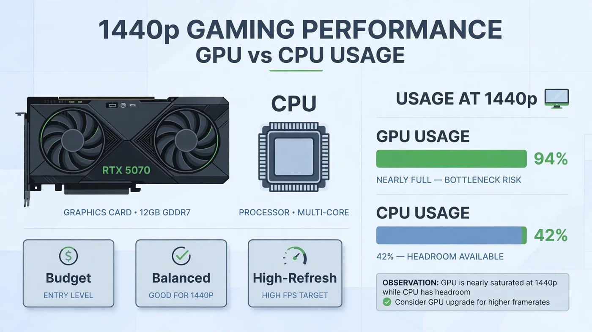

Best CPU for RTX 5070: Balanced Pairing Guide for 1440p
The best CPU for RTX 5070 is the Ryzen 5 9600X for most gamers: a modern six-core AM5 chip that keeps the card fed at 1440p without paying for speed the GPU cannot use. If you play at 1080p on a high-refresh monitor or in CPU-heavy games, the Ryzen 7 9800X3D is the stronger pick, and if you are still on AM4, the Ryzen 7 5700X3D is the best upgrade without replacing your board and RAM. This guide explains why that tier is the sweet spot, which CPUs sit in each tier, and how resolution, refresh rate and the rest of your system change the answer.

Best CPU for RTX 5070: The Short Answer
There is no single best CPU for RTX 5070 builds, because the right chip depends on your resolution and refresh rate — but there is a clear default. For a new build aimed at 1440p gaming, buy the Ryzen 5 9600X. It is a current-generation six-core AM5 processor, fast enough to keep the RTX 5070 busy where the card is the limit,.
Step up to the Ryzen 7 9800X3D only with a specific reason — a 1080p high-refresh monitor, competitive esports at very high frame rates, or CPU-heavy simulation and strategy games — since its 3D V-Cache gives it extra headroom exactly where the CPU sets the ceiling. Step down to the Ryzen 7 5700X3D only when you already own an AM4 board and DDR4 RAM: it is the best CPU you can drop into that platform. Our CPU and GPU pairing guide explains the same balance in general terms.
What the RTX 5070 Actually Needs from a CPU
The RTX 5070 is NVIDIA's Blackwell mid-range card: 6,144 CUDA cores, 12GB of GDDR7 memory and DLSS 4 with Multi Frame Generation, according to NVIDIA's official RTX 5070 family specifications. It is built as a 1440p card first — strong at high settings at 1440p and playable at 4K with upscaling — and that sets the CPU requirement. A card rendering most frames at 1440p asks the CPU to prepare each frame at a moderate pace; it does not need the fastest processor available, but it does need a modern one.
What "modern" means is specific: enough single-thread speed to prepare frames without stalling the GPU, enough cores for the game plus background tasks, and fast memory access. A current six-core or eight-core chip clears that bar comfortably; an older four-core chip, or one held back by slow single-channel RAM, does not. Our bottleneck check guide shows how to tell which side is actually limiting you. DLSS raises the bar slightly: upscaling and frame generation make the GPU produce frames faster, so the CPU must prepare more of them per second — see our DLSS, FSR and frame generation guide.
The Best CPU for RTX 5070 at 1440p
At 1440p, the best CPU for RTX 5070 is the one that never makes the graphics card wait — and the Ryzen 5 9600X does that for the least money. It is a six-core, 12-thread AM5 processor with a 65 W default TDP, so it runs cool, works on affordable B650 boards, and still has the single-thread speed modern games need. At 1440p with high or ultra settings, the RTX 5070 is the limit in most games, so the 9600X's job is simply to stay out of the way — and it does.
The Ryzen 7 9700X is the sensible step up for eight cores on the same AM5 platform: gaming plus streaming, recording, or heavier multitasking. It costs more for little extra gaming performance at 1440p, but the extra cores earn their keep the moment you ask the PC to do two things at once. AMD has committed AM5 support through 2029, so a board bought today should accept future AM5 processors with a BIOS update. Our streaming while gaming guide covers how to tell whether your CPU or your encoder is the limit when you stream.
Best CPU for RTX 5070 at 1080p High Refresh
At 1080p the balance flips: frames are cheap for the GPU, so the CPU's preparation speed sets the ceiling. On a 240Hz monitor, or in competitive titles where you chase every frame, the Ryzen 7 9800X3D is the safest gaming-first choice — an AM5 Zen 5 X3D part with 3D V-Cache, PCIe 5.0 and DDR5 support, whose extra cache lifts frame rates exactly when the CPU is the limit.
The difference shows up in CPU-heavy games — large-scale multiplayer, simulation and strategy titles, and esports at low settings — where the GPU finishes frames so fast that the processor's speed decides the frame rate. If you play those games on a high-refresh screen, the 9800X3D is worth its premium; for story-driven games at 1440p it is not, because the GPU is the limit there. It is a gaming-first chip, though: if heavy rendering or video work matters as much as gaming, a higher-core-count chip such as the Ryzen 9 9950X3D fits better. Our resolution bottleneck guide explains how the CPU-GPU balance shifts from 1080p to 4K.
Best Budget CPU for RTX 5070
The best budget CPU for RTX 5070 is not the cheapest chip you can find — it is the cheapest CPU that keeps the build balanced for your resolution. On a new AM5 build, that is the Ryzen 5 9600X itself: it is already the budget pick in this guide, and going cheaper usually means an older platform or a chip that will hold the card back at 1080p.
If your budget is genuinely tight, there are two honest ways down: the Ryzen 5 7600X on AM5 — older, but still a fast six-core chip that pairs well with the RTX 5070 at 1440p — or staying on AM4 with the Ryzen 7 5700X3D, covered next. Do not pair the card with a very old or very slow CPU to save money now: a processor that cannot feed the card wastes the money you spent on the graphics card itself.
Already on AM4? The Ryzen 7 5700X3D Upgrade
If you already own an AM4 board with DDR4 RAM, the Ryzen 7 5700X3D is the clearest value upgrade in this guide. It drops into your existing board — usually after a BIOS update — and its 3D V-Cache gives it gaming performance that holds up well against current mid-range AM5 chips. At 1440p and 4K, where the RTX 5070 is the limit, it will not hold the card back in any meaningful way.
The maths is simple: a 5700X3D costs you one part, while a move to AM5 costs you a CPU, a motherboard and a DDR5 kit. Check your board maker's CPU support list and update the BIOS before swapping the chip in. Our motherboard bottleneck guide covers the compatibility checks. Its one honest limit is 1080p high refresh, where its older architecture gives up a little to current AM5 chips.
Intel Options for the RTX 5070
AMD wins the value argument for most RTX 5070 buyers, but Intel has two genuine options: the Core Ultra 5 245K, the budget Intel pick for 1440p and 4K gaming on the LGA 1851 platform and good value when on sale, and the Core Ultra 7 265K, the mixed-use pick with stronger multicore performance for gaming plus productivity. Either chip needs fast DDR5 to show its best, and both sit on a platform with a shorter upgrade runway than AM5. If you already own the older LGA 1700 platform instead, the Core i5-12400F is still a sensible budget partner for this card at 1440p — our best GPU for i5-12400F guide covers the full range of cards that chip can feed.
Platform Costs: The CPU Price Is Not the Whole Price
A CPU decision is a platform decision, and the chip's price tag is only part of it. An AM5 build needs a new board and DDR5 RAM; an AM4 upgrade needs neither; an Intel LGA 1851 build needs its own board and DDR5. Before you compare two CPUs, add up the full platform cost — chip, board, RAM, and a cooler if the chip does not include one — because the "cheaper" CPU on the more expensive platform is often the dearer build.
Cooling and power matter too: a 65 W chip like the 9600X is happy on an affordable air cooler, while higher-power chips need better cooling to hold boost speeds — see our thermal throttling guide — and a mid-range CPU plus an RTX 5070 needs a quality power supply with headroom, as our PSU guide explains.
RAM: The Supporting Cast
RAM is the supporting part most likely to quietly hold back an RTX 5070 build. Two sticks in dual-channel mode beat one stick of the same total capacity, and RAM running at its rated speed — XMP or EXPO enabled in the BIOS — beats the same kit running at fallback speeds. A fast CPU fed by slow or single-channel RAM still waits on memory, and the symptom looks exactly like a CPU bottleneck. Our single vs dual channel guide, RAM speed guide and XMP/EXPO guide cover the checks.
How to Check Your Current CPU Is Keeping Up
If you already own a CPU and are wondering whether it can feed an RTX 5070, do not guess — measure. Install the card, play your usual games for a few minutes with an overlay showing GPU usage, per-core CPU usage and frame times, and read the numbers as our bottleneck check guide describes.
- GPU near full, CPU with headroom, FPS rises when you lower resolution: the GPU is the limit. Your CPU is fine.
- CPU near full on one or two cores, GPU usage low, FPS barely changes when you lower resolution: the CPU is the limit — a 5700X3D on AM4, or a move to a 9600X-class AM5 chip, is the fix.
- Stutter with frame-time spikes while usage looks normal: check RAM in dual-channel mode at its rated speed, and check for thermal throttling before blaming the CPU.
- Both usages low and FPS stuck at a round number: a frame cap, VSync or a power limit — not a CPU problem. Our low GPU usage guide covers those checks.
Repeat the same scene after any change: a real fix shows up as higher FPS and steadier frame times.
CPUs to Skip with the RTX 5070
Three categories are worth skipping. First, very old or low-core-count CPUs — four-core chips from several generations ago, and budget chips built for office PCs — will hold the RTX 5070 back even at 1440p. Second, a flagship CPU bought purely for a 1440p gaming build: at that resolution the GPU is the limit, so the extra cores and clock speed buy nothing you can see. Third, a CPU upgrade bought on a single percentage from a bottleneck calculator — the estimate is a starting point, not a verdict, as our calculator accuracy guide explains. Measure your own games first.
Free PC Bottleneck Calculator — Estimate CPU and GPU balance for your resolution and workload: check whether your CPU, GPU or VRAM is the slow half of the frame on the PC Bottleneck Calculator (see its methodology page) before you spend money on an RTX 5070 CPU upgrade.
Conclusion
For most gamers the best CPU for RTX 5070 is the Ryzen 5 9600X: fast enough to keep the card fed at 1440p, cool and affordable, and sitting on an AM5 platform with years of upgrades ahead. The Ryzen 7 9800X3D is the right step up for 1080p high-refresh and CPU-heavy games, the Ryzen 7 5700X3D is the smartest upgrade if you already own AM4, and the Ryzen 7 9700X covers gaming plus heavier multitasking. Match the tier to your resolution and refresh target, price the whole platform, and let your own usage measurements make the final call. If you own the previous generation card instead, our best CPU for RTX 4070 guide covers the same decision for the 4070 and 4070 Super.
Frequently Asked Questions
What is the best CPU for the RTX 5070?
For most gamers, the best CPU for the RTX 5070 is the Ryzen 5 9600X: a modern six-core AM5 chip that keeps the card fed at 1440p without paying for speed the GPU cannot use. If you play at 1080p on a high-refresh monitor or in CPU-heavy games, the Ryzen 7 9800X3D is the stronger pick thanks to its 3D V-Cache. On AM4, the Ryzen 7 5700X3D is the best upgrade without a platform change.
What is the best CPU to pair with an RTX 5070 for 1440p gaming?
For 1440p gaming, the Ryzen 5 9600X or Ryzen 7 9700X is the best pairing for an RTX 5070. At 1440p the graphics card does most of the work, so a mid-range modern CPU is enough to keep it fed, and the money saved versus a flagship CPU is better spent on faster RAM, a better monitor or the next tier of graphics card. Only step up to a 9800X3D if you also chase very high frame rates in CPU-heavy titles.
Is the Ryzen 5 9600X enough for the RTX 5070?
Yes, for most builds. The Ryzen 5 9600X is a six-core, 12-thread AM5 processor with a 65 W default TDP, and it is fast enough to keep an RTX 5070 busy at 1440p and 4K, where the GPU is the limit. Its weak spot is 1080p high-refresh gaming in CPU-heavy titles, where a stronger CPU with more cache can raise frame rates — if that is your use case, the Ryzen 7 9800X3D is the better pick.
Will a Ryzen 7 5700X3D bottleneck an RTX 5070?
At 1440p and 4K, no — the Ryzen 7 5700X3D is a strong match for the RTX 5070, because its 3D V-Cache keeps game logic fast and the GPU becomes the limit at those resolutions. At 1080p with a high-refresh monitor it can leave a little performance on the table versus a current AM5 chip, but it is still the best CPU upgrade you can make without replacing your AM4 motherboard and DDR4 RAM.
Can I pair an RTX 5070 with a Ryzen 5 5600?
You can, but expect a CPU limit in some games. The Ryzen 5 5600 is a capable older chip, and at 1440p with high settings the RTX 5070 will still be the limit in many titles — but at 1080p, in CPU-heavy games and in high-refresh esports, the 5600 will hold the card back. If you already own a 5600, try the card first and measure; if the CPU is the limit, the Ryzen 7 5700X3D is the drop-in upgrade on the same board.
Sources
Official documentation referenced in this guide:
- NVIDIA: GeForce RTX 5070 Family (Blackwell architecture, 6,144 CUDA cores, 12GB GDDR7, DLSS 4 with Multi Frame Generation)
- AMD: Ryzen 7 9800X3D (AM5 Zen 5 X3D processor with 3D V-Cache, PCIe 5.0 and DDR5 support)
- AMD: Ryzen 5 9600X (AM5 processor, 6 cores / 12 threads, 65 W default TDP)
- AMD: Ryzen 7 5700X3D (AM4 processor with 3D V-Cache)